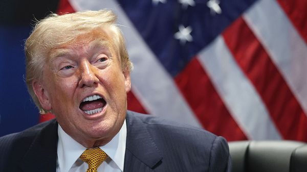
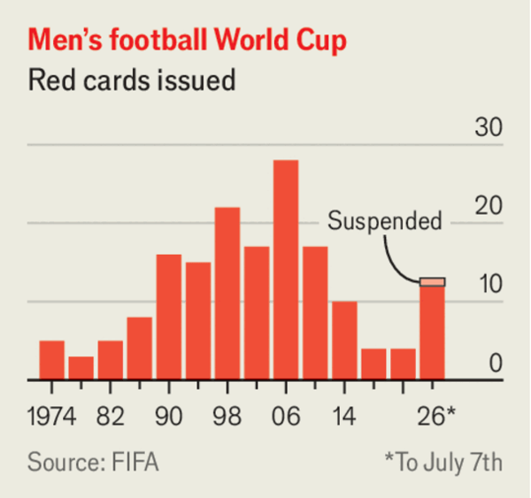

Jul 09, 2026 11:46 PM

Donald Trump began the NATO ·summit in Ankara, Turkey’s capital, by airing his grievances with allies. He grumbled about their lack of support for the Iran war and said that the row over Greenland had also “hurt my relationship” with Europe, reiterating his belief that America should control the Danish territory. But he softened his tone during the gathering and signed up to a communiqué that reasserted NATO’s “ironclad commitment to our collective defence”.
Mr Trump also made a significant concession to Ukraine by granting it a licence to make Patriot surface-to-air interceptor missiles, a response to a plea from Volodymyr Zelensky for more air-defence systems. The Ukrainian president’s request came after Russia again pounded Kyiv, killing 28 people. A bombardment a few days earlier killed 30. Ukraine could not stop the ballistic missiles used in the attacks. Meanwhile, Ukrainian drones struck Russia’s largest oil refinery at Omsk, 2,700km (1,680 miles) from Ukraine. Mr Trump said he backed Ukraine striking deep inside Russia as a means to end the war.
Iran launched drone attacks on three tankers it said had ignored designated shipping routes through the Strait of Hormuz. Mr Trump ordered new strikes on Iran and revoked the waiver of sanctions covering Iranian oil exports. Mark Rutte, NATO’s secretary-general, supported America’s actions as “absolutely necessary”. Iran responded with attacks on Bahrain, Kuwait and Qatar. The American president said that Iran’s leaders were “scum” and the ceasefire was “over”.
The funeral was held of Ayatollah Ali Khamenei·, Iran’s former supreme leader, who was killed in February on the first day of the war. His coffin travelled for six days over 2,600km (1,600 miles), across five cities in Iran and Iraq. Mojtaba Khamenei, his son and successor, did not appear at the funeral; he has not been seen since the strike that killed his father.
In Algeria, the result of a recent election confirmed that the ruling National Liberation Front and allied parties retained a majority in the parliament, which usually rubber-stamps decisions by the president. Only 21% of those registered bothered to vote, the lowest turnout ever recorded.
The paramilitary Rapid Support Forces encircled el-Obeid in central Sudan, trapping half a million civilians. Reports emerging from the city are eerily reminiscent of those from el-Fasher, where the RSF is accused of massacring perhaps tens of thousands of civilians last October.
Large parts of Bamako, Mali’s capital, were left without water and electricity after suspected sabotage damaged a power line serving the city, highlighting the vulnerability of infrastructure in a worsening security crisis. Separately, jihadists and separatists launched co-ordinated attacks on military installation in the country’s north, where the ruling junta has been losing territory.
Zimbabwe’s president signed into law constitutional amendments to extend and cement his hold on power. The change abolishes direct presidential elections and postpones the next vote. Emmerson Mnangagwa, who is 83, had previously promised to step down once his term ends in 2028.
In the latest hit to South Africa’s reputation from anti-migrant protests, Ghana asked Cyril Ramaphosa, South Africa’s president, to postpone a visit planned for next month. This follows the killing of a Ghanaian in Cape Town. Ghana says at least 15 of its citizens have been seriously injured in anti-foreigner protests in South Africa.
China carried out a rare test of a long-range ballistic missile· over the Pacific Ocean. The missile, with a dummy warhead, was launched from a submarine, and alarmed countries in the region. Japan said it was an example of the “intensification of China’s military activities”.
A prison riot in Sri Lanka left 20 convicts and seven guards dead. The violence in Negombo, just north of Colombo, was sparked by an argument among inmates about who controlled the drug-trafficking trade inside the prison.
Pakistan said that 42 security personnel had been killed in three attacks by militants on Balochistan, a province where separatists have waged a terrorist campaign for decades. The army said 54 militants were killed in the clashes.
The Democratic candidate in Maine’s Senate race suspended his campaign·, after a woman accused him of raping her. Graham Platner has also faced other claims of misconduct. He denies the allegations. Democrats will now try to select another candidate in the race, which they must win if they hope to gain control of the Senate in the midterms.
In France, the court of appeal upheld Marine Le Pen’s conviction for misusing European funds, but enabled her to run for the presidency· next year by shortening a ban on her standing for elected office. The leader of the populist-right National Rally announced that she would indeed be a candidate for president again and would appeal against her conviction at France’s highest court, the Cour de Cassation.
Nigel Farage, the leader of Britain’s populist-right Reform UK, resigned from his seat in Parliament·, triggering a by-election. Mr Farage has come under scrutiny and criticism for a £5m ($6.7m) donation he received. Mr Farage says his constituents “should be the judges” of his actions. The main political parties won’t stand in the by-election, so Mr Farage will do battle with the likes of Count Binface and the Monster Raving Loony party in an attempt to re-establish his credibility.
The British government issued a conditional pardon to Ruth Ellis, the last woman to be executed in Britain. Ellis shot her lover dead in 1955 following an abusive relationship, during which he punched her in the stomach, causing the miscarriage of their baby. The government recognises that Ellis killed David Blakely, but said her execution had been a “historic injustice”.
The suspect in the parcel bombing of a Ukrainian oligarch and his family in Monaco was found dead in Ukraine with gunshot wounds to her head. An employee at Ukraine’s intelligence service and a former police officer were arrested in connection with her murder.
Keiko Fujimori was declared the winner of Peru’s presidential election, which was held on June 7th. Ms Fujimori, the conservative candidate, took 50.1% of the vote in the run-off. Her margin of victory was just 50,000 votes over Roberto Sánchez, her left-wing opponent. During the long count of the ballot Mr Sánchez alleged, without evidence, that the election had been manipulated to benefit Ms Fujimori, but he has now said he recognises that she has been officially elected.
The authorities in Cuba struggled to restore power following another collapse of the electricity grid. Meanwhile, Raúl Guillermo Rodríguez Castro, the grandson of Raúl Castro, Cuba’s former leader, said he was willing to negotiate with America. Mr Rodríguez Castro held a secret meeting with Marco Rubio, America’s secretary of state, in February.
The International Olympic Committee provisionally lifted its suspension of Russian athletes, though it hasn’t decided if the Russian flag and anthem will still be barred. The suspension was introduced in October 2023 because Russia was organising Olympic committees in occupied Ukraine.

At the World Cup Folarin Balogun, America’s star player, received a red card for a dangerous challenge on an opposing player, which meant he should have been suspended from America’s next game, against Belgium. Donald Trump complained to the president of FIFA, football’s world body. FIFA has the discretion to suspend the ban, which it duly did after Mr Trump’s intervention. It is the only time a red card has been suspended at a World Cup since automatic bans were standardised in 1970. UEFA, Europe’s governing body, said FIFA had “crossed a red line”. The US team was subsequently thrashed 4-1 by Belgium.